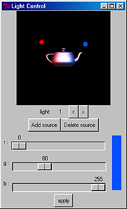
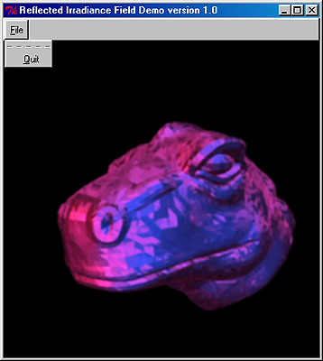

|
irrad demo version 1.0
Program code contributors: |
Introduction
-
- The ability to change illumination (relight) under the framework of IBMR (Image-Based Modeling and Rendering) is a necessity for graphics purpose. Hence, image-based relighting receives much attention recently. Current problem in relighting includes data compression and speed optimization. In 1997, we presented a multidimensional image representation called apparent pixel BRDF to represent image with illumination information. Since it stores data using spherical harmonic transform which requires substantial computation.
- A new image representation that incorporates illumination is proposed. It can be regarded as the dual of light field representation. The light source position (point source) is sampled on an additional light-source plane (qr). However, the 4D function does not directly represent the irradiance incident on object surface, since it is the radiance that is seen by the observer. Instead, it stores the reflected irradiance of light when a point source is located at (q,r). Hence, we call this four-dimensional function of (q, r, s, t) the reflected irradiance field.
- The following diagram compares the light field and the reflected irradiance field. Since it is simple and can be accelerated by ordinary texture mapping hardware, it can relight image in real-time on ordinary PC equipped with standard graphics board. To demonstrate its applicability, we prepared data sets of both synthetic and real scenes.
- The ability to change illumination (relight) under the framework of IBMR (Image-Based Modeling and Rendering) is a necessity for graphics purpose. Hence, image-based relighting receives much attention recently. Current problem in relighting includes data compression and speed optimization. In 1997, we presented a multidimensional image representation called apparent pixel BRDF to represent image with illumination information. Since it stores data using spherical harmonic transform which requires substantial computation.
|
|

System Requirement
- Hardware: Pentium III or above, GeForce 2 or above, texture memory
of 64MB or more
- OS: Windows 98/NT/2000/XP, with OpenGL
Installation Instruction
-
(1) Download the InstallShield of irrad demo 1.0,
irrad-install.zip
(2) Extract the files and run "setup.exe"
-
Note:
- To execute the demo, Windows 2000/XP users have to change path to the install path to start the demo in command line. This is because the InstallShield cannot successfully set the working path for Windows 2000/XP.
User Manual
-
  Instructions: (Move the mouse cursor over the above interface to see the function of each widget)
Publication
Related Publication
Related Demo